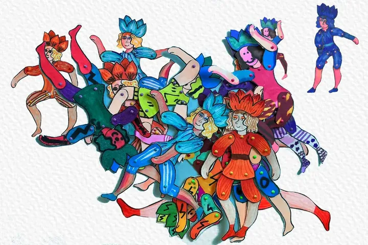

Diario


Costruire con Baruch
Progettare, sporcarsi, sbagliare, finire. I laboratori sono il luogo dove la tecnica incontra il gioco, per ogni età. Qui trovi i miei workshop e le novità sui prossimi incontri.
Non serve essere artisti per partecipare: serve la curiosità di smontare il mondo e ricostruirlo con i propri colori.
Vegetazione selvaggia
La pittura espressiva di masse verdi e boschi attraverso un segno istintivo. Leggi la pagina
Caraffa
Tutto è partito da una caraffa, una di quelle ceramiche tipiche di Deruta, su cui è dipinto un piccolo omino medievale. Leggi la pagina